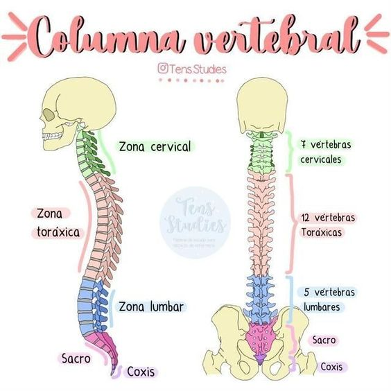

Articulaciones
Tipos de articulaciones

- Tenemos 11 articulaciones en la columna:
- Entre el occipital y C1: los dos condilos del occipital se articulan con las carillar articulares superiores de las masas laterales de C1.
- Entre C1 y C2: tenemos dos dentro de esta, la lateral y la medial. La lateral, las carillas articulares de la cara inferior de las masas laterales de C1, articulan con las carillas laterales de la base de la apofisis odontoides de C2. En la medial, el anillo osteoligamentoso de C1 articula con la apofisis odontoides de C2.
- Entre los cuerpos vertebrales: las superficiestes articulares son las caras superior e inferiror, los medios de union son el disco intervertebral.
- Entre L5 y S1: L5 se dirije hacia abajo y atras para que su carillar articular inferior articule con la cara superior de S1. La inclinaicon de ambas vertebras forma un angulo de 100° a 130° denominado ángulo promontorio.
- Entre Sacro y coccix: tenemos una superficie sacra convexa y otra coccígea cóncava.
- El tórax contiene varias articulaciones importantes que permiten el movimiento y la flexibilidad necesarios para la respiración y otras funciones vitales. Las principales articulaciones del tórax incluyen:
- Articulaciones costocondrales: Estas son las articulaciones donde las costillas se unen al esternón a través de las cartílagos costales. Son articulaciones cartilaginosas que permiten cierta flexibilidad durante la respiración.
- Articulaciones esternocostales: Son las articulaciones donde las costillas verdaderas (costillas conectadas al esternón mediante cartílagos costales) se unen directamente al esternón. Estas articulaciones son de tipo sinovial y permiten movimientos limitados de las costillas durante la respiración.
- Articulaciones costovertebrales: Son las articulaciones donde las costillas se articulan con las vértebras torácicas de la columna vertebral. Estas articulaciones permiten el movimiento de las costillas durante la respiración y están compuestas por articulaciones sinoviales y ligamentos.
- Estas articulaciones trabajan en conjunto para permitir la expansión y contracción del tórax durante la respiración, así como para proporcionar estabilidad y soporte a la caja torácica.
- La articulación del hombro es una articulación compleja y altamente móvil que une la escápula (omóplato), la clavícula y el húmero. Está formada por la articulación glenohumeral principal y la articulación acromioclavicular. La glenohumeral permite movimientos amplios como la flexión, extensión, abducción, aducción, rotación interna y externa del brazo. Está estabilizada por el manguito de los rotadores y otros músculos que rodean la articulación. La articulación del hombro es crucial para muchas actividades cotidianas y deportivas, pero su alta movilidad también puede hacerla propensa a lesiones si no se cuida adecuadamente.
- La articulación del codo es una articulación sinovial compuesta por tres huesos principales: el húmero, el cúbito y el radio. Está formada por dos articulaciones principales: la articulación humeroulnar, que permite la flexión y extensión del codo, y la articulación humerorradial, que permite la pronación y supinación del antebrazo.
Los ligamentos y músculos que rodean la articulación del codo proporcionan estabilidad y permiten movimientos precisos, como agarrar objetos, doblar el brazo y girar la mano. Esta articulación es fundamental para actividades cotidianas como escribir, comer y levantar objetos, así como para actividades deportivas y laborales que involucran movimientos del brazo y la mano.
- La articulación de la muñeca es una articulación compuesta por varios huesos que permiten una amplia gama de movimientos en la mano y el antebrazo. Está formada por los extremos distales de los dos huesos del antebrazo, el radio y el cúbito, que se articulan con los ocho huesos carpianos en la muñeca. Los ocho huesos carpianos se dividen en dos filas: la fila proximal (escápula, semilunar, piramidal y pisiforme) y la fila distal (trapezoide, trapezoide, capitado y hamato). Estos huesos están unidos por ligamentos fuertes que proporcionan estabilidad a la articulación de la muñeca. La articulación de la muñeca permite movimientos de flexión, extensión, abducción, aducción y circunducción, lo que brinda a la mano y al antebrazo una gran capacidad para realizar tareas delicadas y precisas, así como para soportar el peso y la fuerza en actividades como levantar objetos.
- La articulación de la cadera es una articulación sinovial del tipo enartrosis que conecta el fémur con el acetábulo del hueso coxal. Es una de las articulaciones más grandes y fuertes del cuerpo humano. La cabeza del fémur encaja en el acetábulo, formando una articulación de bola y cavidad que permite movimientos de flexión, extensión, abducción, aducción, rotación interna y rotación externa de la pierna.
La articulación de la cadera es esencial para la estabilidad y el movimiento del cuerpo, soportando el peso corporal y permitiendo actividades como caminar, correr, saltar y realizar movimientos de torsión. Está rodeada por una cápsula articular robusta y reforzada por ligamentos y músculos que proporcionan estabilidad y protección contra lesiones.
- La articulación de la rodilla es una articulación sinovial de tipo bisagra o troclear que une el fémur, la tibia y la rótula. Está compuesta por varios elementos, como los meniscos (cartílagos en forma de "C" que amortiguan y estabilizan la articulación), los ligamentos (como el ligamento cruzado anterior y posterior, que proporcionan estabilidad), y los músculos y tendones que rodean la articulación y permiten su movimiento. La rodilla permite la flexión y extensión de la pierna, así como una ligera rotación.
- La articulación del tobillo es una articulación sinovial que une la pierna con el pie. Está formada por tres huesos principales: la tibia, el peroné y el astrágalo. La tibia y el peroné son los huesos de la pierna, mientras que el astrágalo es un hueso del pie que se articula con ambos.
La articulación del tobillo permite movimientos de flexión plantar (apuntar los dedos hacia abajo), flexión dorsal (levantar los dedos hacia arriba), inversión (girar el pie hacia adentro) y eversión (girar el pie hacia afuera). Estos movimientos son cruciales para caminar, correr, saltar y mantener el equilibrio.
La estabilidad de la articulación del tobillo está asegurada por ligamentos fuertes que conectan los huesos y evitan movimientos excesivos que podrían causar lesiones.